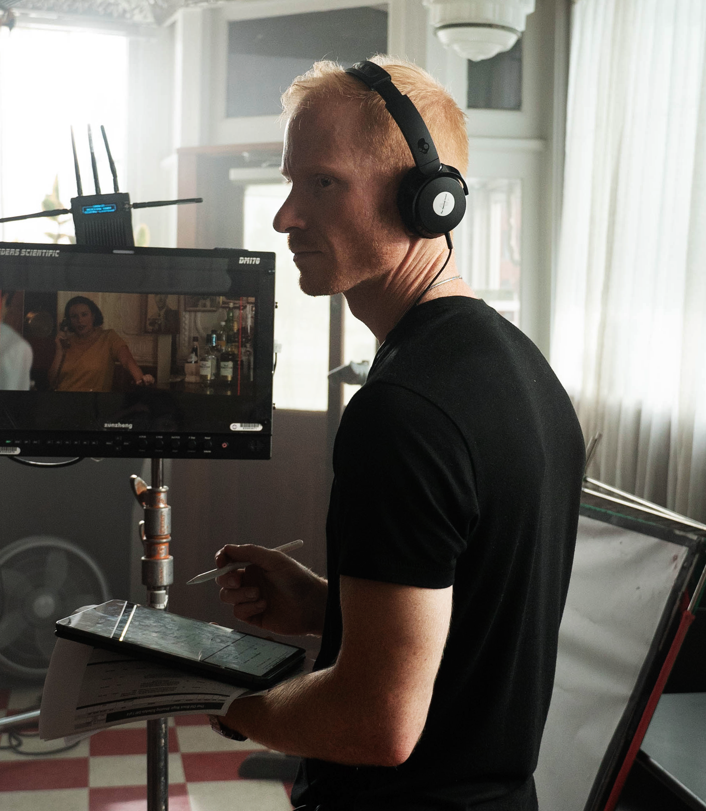

Hi friend,
I’ve been a filmmaker for almost 20 years. I’m an award-winning editor, writer/director, and most recently I've even taken up the craft of script supervising.
All of this funnels into the work I do as a teacher and coach.
And if I still have your attention, I’ll seize my opportunity to tell you
the only thing I really want you to understand -
Right now, in this very moment-
you are unconditionally, unequivocally, irreducibly, absurdly loved.
You are, right now in this very moment-
more valuable than you have ever let yourself dare to believe-
and - in this same moment-
the Universe does not regard you with any more significance
than the last blade of grass you stepped on.
You are not fundamentally broken, in any way.
Not now, nor could you ever be.
You are indefinably whole.
You absolutely are not too far behind, wherever you are in life.
You are exactly where you are meant to be, right now. And you know this.
Despite any present logic or feeling to the contrary, you know this.
You are here to live a great story-
and your great big messy journey is blessed.
It is blessed beyond imagining.
So, if nothing else, take that my friend.
Please take that into every nook and crevice of your life that you claim is mundane.
Take it with you on your way to work,
as you wait in traffic,
in line,
when you order your coffee,
when you send that email or write that message,
when you accidentally notice the sound of your own heartbeat,
when you catch a breeze sneaking past your cheek,
when a moment spent in sunlight suddenly releases tension in a place you didn’t realize was tense,
when you are scrolling your phone,
scrolling streamers,
drinking tea,
chopping vegetables,
laughing alone,
crying with a friend,
yelling about an unknown future,
feeling your blood pressure as you listen to someone else yell about an unknown future,
take it with you to that board meeting,
on that phone call with your insurance company,
at the laundromat,
when you are scraping ice off your car for the fortieth day in a row,
when you are having that conversation with that certain someone,
when you are alone in bed unable to stop thinking of that certain someone,
when you are counting how many times you blink your eyes in a minute,
when you notice you’ve been staring at a spot on the wall for god knows how long because you’ve been trying to make that decision that feels impossible to make–
My friend, if you can learn to take it with you wherever you are…
...then please let us know how you did it, and we can exchange field notes.